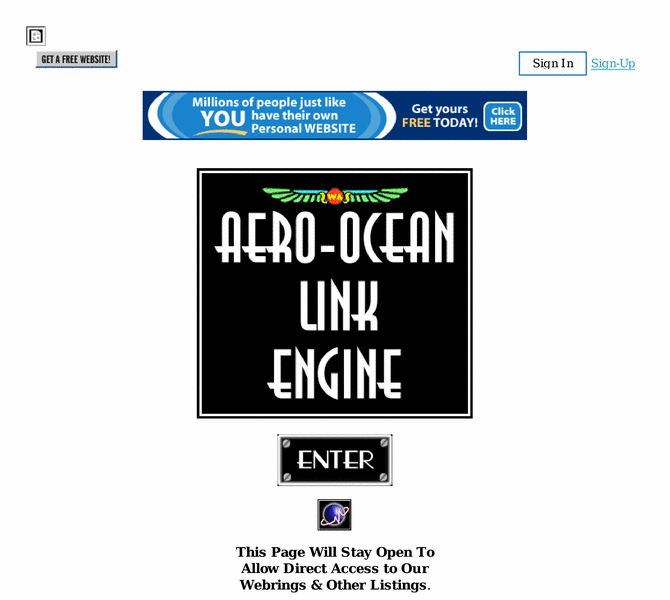

Previewing: Aero-Ocean Link Engine Previewing: Aero-Ocean Link Engine 
Use the left/right red arrow controls to navigate through this ring - Click the preview image to visit the member site.

A constantly expanding database of Aviation-, Maritime- and History-related sites with a comprehensive search facility and free access to both site owners and surfers alike. We invite aircraft, ocean liner, warship, transportation and history enthusiasts to come and view the sites on offer. Webmasters who wish to add their URLs are welcome to apply.
Aero-Ocean Link Engine owned by:
 aerolink aerolink
A member of the original webring since 05/27/2003.
|
|